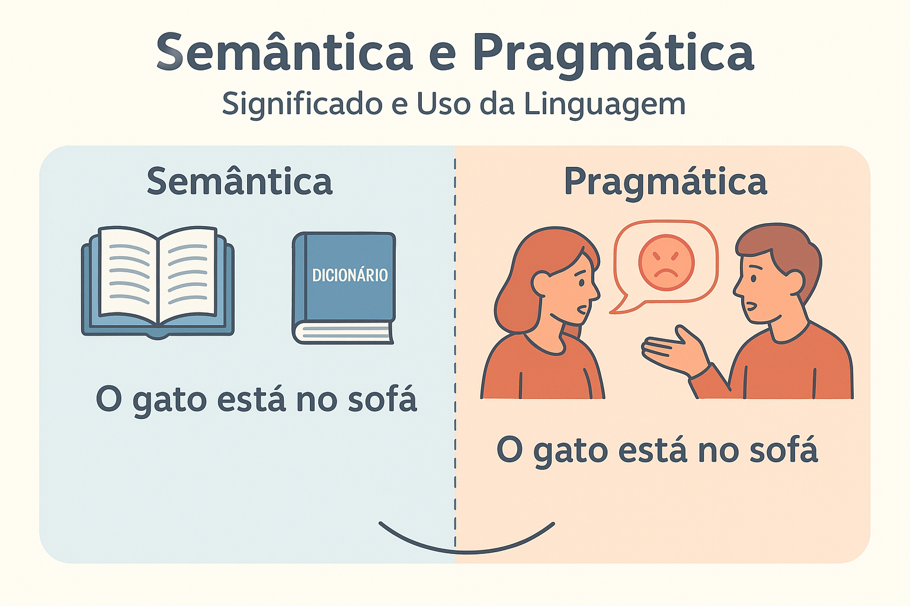

Semântica e Pragmática: Significado, Contexto e o Uso Social da Linguagem
A linguagem humana ultrapassa em muito a função de um mero código instrumental para rotular objetos e catalogar eventos do mundo físico. Falar e escrever constituem formas complexas de ação social e cognitiva, nas quais os interlocutores constroem sentidos negociados, manifestam intenções veladas, realizam acordos e transformam o estado de coisas ao seu redor. No centro dessa dinâmica situam-se duas disciplinas complementares da Linguística: a Semântica e a Pragmática.
Embora ambas compartilhem o objetivo de investigar a significação na linguagem, seus pontos de partida epistemológicos são distintos. Como postulou Charles Morris (1938) ao estabelecer as bases da semiótica clássica, a sintaxe estuda as relações formais entre signos, a semântica examina a relação entre os signos e os objetos a que eles se referem (o significado codificado na língua), e a pragmática investiga a relação dos signos com os seus intérpretes e usuários em situações comunicativas concretas.
Compreender a fronteira fluida e a cooperação entre essas duas áreas é indispensável para interpretar textos além da sua camada literal. O domínio desses conceitos elucida como operam os atos de fala (AUSTIN, 1962; SEARLE, 1969), os pressupostos linguísticos (DUCROT, 1987) e as implicaturas conversacionais (GRICE, 1975), ferramentas indispensáveis para a leitura crítica de discursos políticos, peças publicitárias e interações cotidianas.

Semântica versus Pragmática: o estável e o contingente
Para delimitar o escopo analítico de cada disciplina, a Linguística Contemporânea adota a distinção entre significado da sentença (objeto da semântica) e sentido do enunciado (objeto da pragmática):
Semântica (O que as palavras dizem)
Investiga o significado convencional, dicionarizado e vericondicional (condições de verdade) das expressões e sentenças gramaticais, abstraindo-as do momento concreto de fala.
Foco: A estabilidade do código, as regras de composicionalidade sintática e as relações léxicas intrínsecas (sinonímia, acarretamento lógico).
Natureza: Depende do sistema abstrato da língua (langue).
Pragmática (O que o falante quer dizer)
Estuda a linguagem em uso social efetivo, analisando como o contexto situacional, o conhecimento partilhado e a intenção comunicativa dos sujeitos atribuem novos sentidos ao dito.
Foco: A ação verbal no tempo e no espaço, o não dito, a ironia, os atos de fala, os pressupostos e a quebra de expectativas conversacionais.
Natureza: Emerge na enunciação e na interação viva (parole).
A complementaridade na interface semântica-pragmática
Para Rodolfo Ilari e João Wanderley Geraldi (2006), a semântica fornece o esqueleto formal da mensagem (a moldura literal que restringe as interpretações absurdas), enquanto a pragmática veste esse esqueleto com as carnes da vivência humana, decidindo qual sentido específico triunfa na interação real. Não há oposição excludente, mas uma relação de mútua dependência.
A Teoria dos Atos de Fala: agir por meio das palavras
Na década de 1950, o filósofo britânico J. L. Austin revolucionou os estudos da linguagem com a obra How to Do Things with Words (1962), superando a "ilusão descritivista" de que a linguagem serviria apenas para fazer afirmações verdadeiras ou falsas sobre a realidade. Austin demonstrou que dizer é fazer.
Todo ato de comunicação divide-se em três dimensões simultâneas:
- Ato Locucionário: a produção física e gramatical de sons, palavras e sentenças com significado compreensível (o ato de pronunciar uma frase conforme a gramática);
- Ato Ilocucionário: a força comunicativa e a ação intencional que se realiza ao pronunciar a frase (prometer, ordenar, jurar, advertir, batizar, agradecer);
- Ato Perlocucionário: o efeito psicológico, comportamental ou prático provocado sobre o interlocutor (convencer, amedrontar, irritar, emocionar).
A tipologia de John Searle
John Searle (1969) refinou a teoria austiniana, classificando as forças ilocucionárias em cinco grandes categorias de atos de fala:
| Categoria do Ato de Fala | Propósito Ilocucionário | Compromisso do Falante | Exemplos Clássicos |
|---|---|---|---|
| Assertivos (Representativos) | Comprometer o falante com a verdade da proposição expressa. | Crença / Afirmação da realidade. | "A inflação subiu no último trimestre." / "O réu estava na cidade no dia do crime." |
| Diretivos | Fazer com que o ouvinte realize uma ação no mundo. | Tentativa de influenciar condutas. | "Feche a janela, por favor." / "Poderia me alcançar o documento?" |
| Compromissivos | Comprometer o próprio falante com uma linha de conduta futura. | Obrigação moral ou contratual pessoal. | "Prometo que entregarei o relatório amanhã." / "Juro dizer a verdade." |
| Expressivos | Manifestar o estado psicológico ou emocional do enunciador diante de um fato. | Expressão afetiva e social. | "Parabéns pelo diploma!" / "Lamento profundamente o ocorrido." |
| Declarativos (Performativos estritos) | Alterar imediatamente o estatuto institucional da realidade pela simples emissão do enunciado. | Mudança ontológica e jurídica no mundo exterior (exige autoridade legítima). | "Declaro aberta a sessão legislativa." / "Eu vos declaro marido e mulher." / "Condeno o acusado a cinco anos de reclusão." |
O reino do não dito: pressupostos versus implicaturas
Grande parte do sentido veiculado nas interações sociais não comparece de forma explícita na sintaxe do texto. A pragmática formalizou a distinção crucial entre duas ordens de implícitos: os pressupostos e as implicaturas.
Pressupostos (Inscrição na Língua)
São ideias que decorrem obrigatoriamente de marcas linguísticas presentes na própria estrutura da oração (verbos que denotam início/fim de ação, advérbios continuativos, orações adjetivas explicativas).
Teste da negação: O pressuposto permanece inalterado mesmo se a frase for negada ou interrogada.
Exemplo: "Carlos parou de fumar."
• Se negarmos: "Carlos não parou de fumar."
→ Em ambos os casos, é fato prévio inquestionável que Carlos fumava anteriormente.
Implicaturas Conversacionais (Dedução Contextual)
São significados implícitos que não dependem da gramática estrita da frase, mas sim da violação aparente ou cumprimento do Princípio de Cooperação de Paul Grice no momento do diálogo.
Cancelabilidade: A implicatura pode ser negada ou anulada pelo falante sem contradição lógica formal.
Exemplo:
• Pergunta: "Você vai à festa hoje?"
• Resposta: "Tenho prova de cálculo amanhã às sete da manhã."
→ A resposta não contém um "não", mas a implicatura pragmática imediata é de recusa ao convite.
As Máximas Conversacionais de Grice
Para que a comunicação seja eficiente, Paul Grice (1975) formulou quatro máximas ideais: Quantidade (seja tão informativo quanto necessário), Qualidade (não diga o que crê ser falso), Relação/Relevância (seja pertinente ao assunto) e Modo (seja claro, ordenado e evite ambiguidades). Quando um falante viola deliberadamente uma dessas máximas (por exemplo, respondendo com ironia), o ouvinte infere que há um sentido oculto a ser decifrado.
A influência do contexto situacional na modulação do sentido
Um mesmo enunciado denotativo pode desempenhar forças ilocucionárias opostas dependendo da cena de enunciação. Analisemos a oração simples:
“Está frio aqui.”
- Leitura Semântica Pura: Constatação meteorológica objetiva sobre a temperatura do ambiente imediato;
- Ato de Fala Indireto (Diretivo): Pronunciada por um convidado que olha fixamente para uma janela escancarada, opera como um pedido polido: "Feche a janela, por favor";
- Ato de Fala Expressivo / Crítica: Dita em um escritório refrigerado em excesso, funciona como queixa e repreensão velada à administração do prédio;
- Uso Conotativo / Metafórico: Dita ao entrar em uma sala de reuniões onde impera um clima de animosidade interpessoal, ganha o sentido pragmático de "este ambiente está hostil e distante".
Exemplo prático de análise: a ironia e a quebra pragmática
Corpus de Análise: Interação em um Ambiente de Trabalho
Um estagiário chega à reunião de diretoria com uma hora de atraso e com os relatórios inacabados. O diretor olha para o relógio e declara em tom pausado:
"Você é realmente a personificação viva da pontualidade e do profissionalismo."
Roteiro de Desconstrução Semântica e Pragmática
- Nível Semântico (Literal): A sentença afirma formalmente que o interlocutor possui pontualidade impecável e alto padrão profissional (assertivo laudatório).
- Choque Contextual (Quebra da Máxima de Qualidade de Grice): Os fatos objetivos (atraso de uma hora e material incompleto) desmentem frontalmente a proposição literal.
- Cálculo Pragmático do Interlocutor: Como o estagiário sabe que o diretor não é ingênuo e não está delirando, infere que a máxima de qualidade foi violada ostensivamente para produzir ironia.
- Sentido Pragmático Real (Força Ilocucionária): O enunciado funciona como uma repreensão severa, censura de conduta e expressão de profunda contrariedade.
Esquema pedagógico: o itinerário do processamento enunciativo
Do significado literal à interpretação pragmática final
Decodificação semântica literal (o que a frase diz estritamente) → Mapeamento das coordenadas contextuais (quem fala, para quem, em que ambiente) → Rastreamento de pressupostos (quais fatos prévios a língua dá como certos) → Aplicação do Princípio de Cooperação (avaliação de máximas e intenções) → Geração de implicaturas e atos de fala (o que a ação verbal realiza no mundo).
Questões para estudo e reflexão
Questão 1
Qual é a diferença fundamental entre o objeto de estudo da Semântica e o da Pragmática na Linguística Moderna?
Ver resposta comentada
Resposta comentada: A Semântica ocupa-se do significado literal, convencional e abstrato das palavras e sentenças da língua, independentemente do contexto de uso. A Pragmática dedica-se ao significado em contexto, investigando como os fatores situacionais, a intencionalidade dos interlocutores, o conhecimento compartilhado e as relações sociais de poder moldam e transformam os sentidos pretendidos no ato da comunicação.
Questão 2
O que caracteriza um enunciado performativo/declarativo segundo a Teoria dos Atos de Fala de Austin? Exemplifique.
Ver resposta comentada
Resposta comentada: Um enunciado performativo não se limita a descrever ou relatar um fato existente (não é verdadeiro nem falso); ao ser pronunciado por uma autoridade investida de poder legítimo e em circunstâncias adequadas, ele próprio realiza a ação e altera a realidade no mundo exterior. Exemplos clássicos incluem fórmulas como: "Eu vos declaro casados", "Declaro aberta a sessão" ou "Eu te batizo em nome do Pai...".
Questão 3
Como o "teste da negação" permite diferenciar um pressuposto linguístico de uma mera asserção comum?
Ver resposta comentada
Resposta comentada: O teste da negação demonstra que o pressuposto é resistente à negação da sentença matriz. Se dizemos "Maria continua estudando para o concurso", a informação posta é o estudo no presente, e o pressuposto é que ela já estudava no passado. Ao negarmos a frase ("Maria não continua estudando..."), o fato de que ela estudava no passado permanece intacto e indiscutível, comprovando que a informação está gramaticalmente pressuposta pelo verbo aspectual.
Questão 4
Na teoria de Grice, o que é uma implicatura conversacional e como ela é gerada?
Ver resposta comentada
Resposta comentada: Uma implicatura conversacional é um sentido não dito de forma explícita que o ouvinte deduz logicamente a partir do contexto e do Princípio de Cooperação. Ela surge comumente quando um dos interlocutores transgride ostensivamente uma das máximas conversacionais (como a da quantidade, ao ser sucinto demais, ou a da relação, ao mudar de assunto de modo desconexo), forçando o interlocutor a buscar uma leitura inferencial que devolva coerência ao diálogo.
Questão 5
Por que perguntas como "Você pode me passar o sal?" são classificadas pragmaticamente como atos de fala indiretos?
Ver resposta comentada
Resposta comentada: Porque sua estrutura sintática superficial é a de uma pergunta sobre a capacidade física ou motora do ouvinte (ato locucionário interrogativo), mas sua força ilocucionária real é a de um pedido ou ordem polida (ato diretivo). Se o ouvinte respondesse apenas "sim" e não passasse o sal, demonstraria incapacidade de processar o ato de fala indireto, ficando preso à semântica literal da sentença.
Resumo sobre semântica e pragmática
- A Semântica foca no significado literal e convencional contido no sistema abstrato da língua;
- A Pragmática estuda a linguagem em ação, centrando-se no uso, no contexto situacional e nas intenções do enunciador;
- A Teoria dos Atos de Fala (Austin e Searle) postula que a linguagem não apenas relata a realidade, mas atua diretamente sobre ela;
- Os atos de fala desdobram-se em três planos: locucionário (o que se diz), ilocucionário (o que se faz ao dizer) e perlocucionário (o efeito produzido);
- Os pressupostos linguísticos decorrem de gatilhos gramaticais inscritos na frase e sobrevivem ao teste da negação;
- As implicaturas conversacionais (Grice) são deduções pragmáticas derivadas do Princípio de Cooperação e de suas máximas;
- O domínio integrado da semântica e da pragmática é vital para desvendar ironias, duplos sentidos e jogos de poder nos textos contemporâneos.
Perguntas frequentes sobre semântica e pragmática
Qual a diferença básica entre semântica e pragmática?
A semântica analisa o significado literal e fixo das palavras conforme as regras da língua; a pragmática estuda como esse significado se transforma na prática quando as pessoas conversam em situações reais e com intenções específicas.
O que são atos de fala?
São as ações sociais que realizamos por meio da linguagem falada ou escrita, como fazer promessas, emitir ordens, pedir desculpas, advertir, batizar ou agradecer.
O que é um ato de fala indireto?
Ocorre quando a intenção comunicativa real não coincide com a forma gramatical da frase. Por exemplo, dizer "Você tem horas?" tem a forma de uma pergunta sobre posse, mas a função pragmática de um pedido direto: "Diga-me que horas são".
O que é pressuposto?
É uma informação que fica implícita no texto, mas que é indicada por palavras específicas (como parou, começou, voltou, já, ainda) e que continua sendo verdadeira mesmo que a oração seja transformada em negativa.
O que é implicatura conversacional?
É aquilo que o interlocutor entende sem que tenha sido dito com todas as letras, por meio do raciocínio lógico compartilhado na situação de diálogo.
Quem são os principais teóricos da pragmática?
Os filósofos da linguagem J. L. Austin e John Searle (criadores da Teoria dos Atos de Fala), Paul Grice (Princípio de Cooperação e Implicaturas) e Oswald Ducrot (Pressuposição e Argumentação na Língua).
Por que a ironia é um fenômeno essencialmente pragmático?
Porque a semântica da frase diz literalmente uma coisa (ex.: "Que dia maravilhoso!"), mas a situação real (chuva torrencial) associada à entonação faz o ouvinte inferir exatamente o sentido oposto.
Como a pragmática ajuda na interpretação de textos do ENEM?
Ela ensina o candidato a identificar as intenções comunicativas dos autores em charges, crônicas, artigos de opinião e propagandas, decifrando críticas implícitas, quebras de expectativa e posicionamentos ideológicos.
Considerações finais
A cisão entre Semântica e Pragmática é, em última análise, um recurso didático e metodológico das ciências da linguagem. No uso vivo da fala e da escrita, ambas as dimensões atuam em perfeita simbiose: a semântica assegura a estabilidade que torna as palavras reconhecíveis e compartilhadas, enquanto a pragmática confere à linguagem a sua flexibilidade dinâmica, sua sensibilidade social e seu poder de intervenção humana.
Ao exercitar o olhar analítico sobre os atos de fala, os pressupostos inquestionados e as implicaturas que povoam a vida em sociedade, o leitor desenvolve uma imunidade crítica contra a manipulação discursiva, capacitando-se a compreender não apenas aquilo que os textos dizem, mas, fundamentalmente, o que os textos fazem ao serem enunciados.
Conteúdos relacionados
- Noções Iniciais de Semântica: o Significado nas Palavras
- Relações Semânticas no Léxico: Conexões de Sentido e Coesão
- Denotação e Conotação: Sentidos Literal e Figurado na Linguagem
- Ambiguidade e Inferência Semântica no Contexto Textual
- Polissemia e Homonímia: Fenômenos dos Múltiplos Sentidos
- Introdução à Pragmática: Fundamentos e Objetos de Estudo
- Semântica — Índice Completo de Conteúdos
Referências
- AUSTIN, John Langshaw. How to do things with words. Oxford: Clarendon Press, 1962.
- CANÇADO, Márcia. Manual de semântica: noções básicas e exercícios. 3. ed. São Paulo: Contexto, 2012.
- DUCROT, Oswald. O dizer e o dito. Tradução de Eduardo Guimarães. Campinas: Pontes, 1987.
- FIORIN, José Luiz. Elementos de Análise do Discurso. São Paulo: Contexto, 2008.
- GRICE, H. Paul. Logic and conversation. In: COLE, P.; MORGAN, J. (eds.). Syntax and semantics: speech acts. New York: Academic Press, 1975. p. 41-58.
- ILARI, Rodolfo; GERALDI, João Wanderley. Semântica. 11. ed. São Paulo: Ática, 2006.
- KLEIBER, Georges. A semântica de protótipos: novos horizontes na crença e no significado. Tradução de Álvaro Lorencini. São Paulo: EDUC / Pontes, 1990.
- MORRIS, Charles. Foundations of the theory of signs. Chicago: University of Chicago Press, 1938.
- SEARLE, John R. Speech acts: an essay in the philosophy of language. Cambridge: Cambridge University Press, 1969.
- TRAVAGLIA, Luiz Carlos. Gramática e interação: uma proposta para o ensino de gramática. 14. ed. São Paulo: Cortez, 2001.
Explore Outros Conteúdos
Continue seus estudos acessando outras seções do site Mestre Kira: